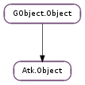

| Subclasses: | Atk.GObjectAccessible, Atk.NoOpObject, Atk.Plug, Atk.Socket, Gtk.Accessible, Gucharmap.ChartableCellAccessible |
|---|
| add_relationship(relationship, target) | |
| get_attributes() | |
| get_description() | |
| get_index_in_parent() | |
| get_layer() | |
| get_mdi_zorder() | |
| get_n_accessible_children() | |
| get_name() | |
| get_object_locale() | |
| get_parent() | |
| get_role() | |
| initialize(data) | |
| notify_state_change(state, value) | |
| ref_accessible_child(i) | |
| ref_relation_set() | |
| ref_state_set() | |
| remove_property_change_handler(handler_id) | |
| remove_relationship(relationship, target) | |
| set_description(description) | |
| set_name(name) | |
| set_parent(parent) | |
| set_role(role) |
| Name | Type | Flags | Description |
|---|---|---|---|
| accessible-component-layer | int | r | The accessible layer of this object |
| accessible-component-mdi-zorder | int | r | The accessible MDI value of this object |
| accessible-description | str | r/w | Description of an object, formatted for assistive technology access |
| accessible-hypertext-nlinks | int | r | The number of links which the current Atk.Hypertext has |
| accessible-name | str | r/w | Object instance’s name formatted for assistive technology access |
| accessible-parent | Atk.Object | r/w | Is used to notify that the parent has changed |
| accessible-role | int | r/w | The accessible role of this object |
| accessible-table-caption | str | r/w | Is used to notify that the table caption has changed; this property should not be used. accessible-table-caption-object should be used instead |
| accessible-table-caption-object | Atk.Object | r/w | Is used to notify that the table caption has changed |
| accessible-table-column-description | str | r/w | Is used to notify that the table column description has changed |
| accessible-table-column-header | Atk.Object | r/w | Is used to notify that the table column header has changed |
| accessible-table-row-description | str | r/w | Is used to notify that the table row description has changed |
| accessible-table-row-header | Atk.Object | r/w | Is used to notify that the table row header has changed |
| accessible-table-summary | Atk.Object | r/w | Is used to notify that the table summary has changed |
| accessible-value | float | r/w | Is used to notify that the value has changed |
| Name | Parameters | Return | Description |
|---|---|---|---|
| active-descendant-changed | int | The “active-descendant-changed” signal is emitted by an object which has the state Atk.StateType.MANAGES_DESCENDANTS when the focus object in the object changes. For instance, a table will emit the signal when the cell in the table which has focus changes. | |
| children-changed | int, int | The signal “children-changed” is emitted when a child is added or removed form an object. It supports two details: “add” and “remove” | |
| focus-event | bool | The signal “focus-event” is emitted when an object gained or lost focus. | |
| property-change | int | The signal “property-change” is emitted when an object’s property value changes. The detail identifies the name of the property whose value has changed. | |
| state-change | str, bool | The “state-change” signal is emitted when an object’s state changes. The detail value identifies the state type which has changed. | |
| visible-data-changed | The “visible-data-changed” signal is emitted when the visual appearance of the object changed. |
| Name | Type | Access |
|---|---|---|
| accessible_parent | Atk.Object | r |
| description | str | r |
| layer | Atk.Layer | r |
| name | str | r |
| parent | GObject.Object | r |
| relation_set | Atk.RelationSet | r |
| role | Atk.Role | r |
Bases: GObject.Object
This class is the primary class for accessibility support via the Accessibility ToolKit (ATK). Objects which are instances of Atk.Object (or instances of Atk.Object-derived types) are queried for properties which relate basic (and generic) properties of a UI component such as name and description. Instances of Atk.Object may also be queried as to whether they implement other ATK interfaces (e.g. Atk.Action, Atk.Component, etc.), as appropriate to the role which a given UI component plays in a user interface.
All UI components in an application which provide useful information or services to the user must provide corresponding Atk.Object instances on request (in GTK+, for instance, usually on a call to #gtk_widget_get_accessible ()), either via ATK support built into the toolkit for the widget class or ancestor class, or in the case of custom widgets, if the inherited Atk.Object implementation is insufficient, via instances of a new Atk.Object subclass.
See also: Atk.ObjectFactory, Atk.Registry. (GTK+ users see also #GtkAccessible).
| Parameters: |
|
|---|---|
| Returns: | True if the relationship is added. |
| Return type: |
Adds a relationship of the specified type with the specified target.
| Returns: | an Atk.AttributeSet consisting of all explicit properties/annotations applied to the object, or an empty set if the object has no name-value pair attributes assigned to it. This #atkattributeset should be freed by a call to Atk.Attribute.set_free (). |
|---|---|
| Return type: | [int] |
Get a list of properties applied to this object as a whole, as an Atk.AttributeSet consisting of name-value pairs. As such these attributes may be considered weakly-typed properties or annotations, as distinct from strongly-typed object data available via other get/set methods. Not all objects have explicit “name-value pair” Atk.AttributeSet properties.
| Returns: | a character string representing the accessible description of the accessible. |
|---|---|
| Return type: | str |
Gets the accessible description of the accessible.
| Returns: | an integer which is the index of the accessible in its parent |
|---|---|
| Return type: | int |
Gets the 0-based index of this accessible in its parent; returns -1 if the accessible does not have an accessible parent.
| Returns: | an Atk.Layer which is the layer of the accessible |
|---|---|
| Return type: | Atk.Layer |
Gets the layer of the accessible.
| Returns: | a int which is the zorder of the accessible, i.e. the depth at which the component is shown in relation to other components in the same container. |
|---|---|
| Return type: | int |
Gets the zorder of the accessible. The value GObject.G_MININT will be returned if the layer of the accessible is not Atk.Layer.MDI.
| Returns: | an integer representing the number of accessible children of the accessible. |
|---|---|
| Return type: | int |
Gets the number of accessible children of the accessible.
| Returns: | a character string representing the accessible name of the object. |
|---|---|
| Return type: | str |
Gets the accessible name of the accessible.
| Returns: | a UTF-8 string indicating the POSIX-style LC_MESSAGES locale of accessible. |
|---|---|
| Return type: | str |
Gets a UTF-8 string indicating the POSIX-style LC_MESSAGES locale of accessible.
| Returns: | a Atk.Object representing the accessible parent of the accessible |
|---|---|
| Return type: | Atk.Object |
Gets the accessible parent of the accessible.
| Returns: | an Atk.Role which is the role of the accessible |
|---|---|
| Return type: | Atk.Role |
Gets the role of the accessible.
| Parameters: | data (object) – a object which identifies the object for which the Atk.Object was created. |
|---|
This function is called when implementing subclasses of Atk.Object. It does initialization required for the new object. It is intended that this function should called only in the ..._new() functions used to create an instance of a subclass of Atk.Object
| Parameters: |
|---|
Emits a state-change signal for the specified state.
| Parameters: | i (int) – a int representing the position of the child, starting from 0 |
|---|---|
| Returns: | an Atk.Object representing the specified accessible child of the accessible. |
| Return type: | Atk.Object |
Gets a reference to the specified accessible child of the object. The accessible children are 0-based so the first accessible child is at index 0, the second at index 1 and so on.
| Returns: | an Atk.RelationSet representing the relation set of the object. |
|---|---|
| Return type: | Atk.RelationSet |
Gets the Atk.RelationSet associated with the object.
| Returns: | a reference to an Atk.StateSet which is the state set of the accessible |
|---|---|
| Return type: | Atk.StateSet |
Gets a reference to the state set of the accessible; the caller must unreference it when it is no longer needed.
| Parameters: | handler_id (int) – a int which identifies the handler to be removed. |
|---|
Removes a property change handler.
| Parameters: |
|
|---|---|
| Returns: | True if the relationship is removed. |
| Return type: |
Removes a relationship of the specified type with the specified target.
| Parameters: | description (str) – a character string to be set as the accessible description |
|---|
Sets the accessible description of the accessible. You can’t set the description to None. This is reserved for the initial value. In this aspect None is similar to Atk.Role.UNKNOWN. If you want to set the name to a empty value you can use “”.
| Parameters: | name (str) – a character string to be set as the accessible name |
|---|
Sets the accessible name of the accessible. You can’t set the name to None. This is reserved for the initial value. In this aspect None is similar to Atk.Role.UNKNOWN. If you want to set the name to a empty value you can use “”.
| Parameters: | parent (Atk.Object) – an Atk.Object to be set as the accessible parent |
|---|
Sets the accessible parent of the accessible.